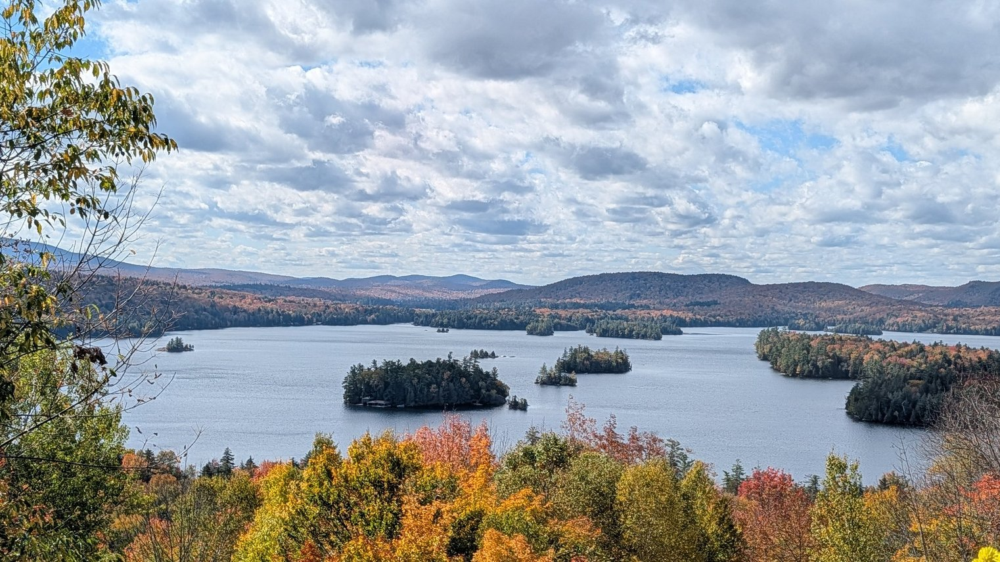

WEEKLY REMINDERS/ANNOUNCEMENTS – Eco 238, Week 7
** Your EETT Group Precis is Due on Sunday Night. We want those uploaded to the appropriate section on Blackboard. However, we also want a printed copy delivered at the start of class on Tuesday. Be sure all group member names are on it. * * *
Topics and Readings This Week: We’ll be covering the challenges of Dynamic Efficiency calculations, and then moving onto the Valuation Section of the course.
Weekly Assignment: Note that you do NOT have an assignment due over the Fall Break. Use that time to rest and enjoy, and of course make more progress on your EETT projects.
The following two weeks of assignments are posted already. Lots of stuff to “show us.”
TA Office Hours and Info
Look for an announcement from our Head TA Jingyao Wang Wu for an update on Office Hours and discussion session opportunities.
My Availability
Check tiny.cc/RizzoHours for up to date information. Stop by to talk about your projects!
I will be away from electronics from Friday afternoon through Tuesday night.
This Week at Rochester
STAFF PICKS STAFF PICKS
Thursday · Economics: Pablo Peña: Human Capital for Humans
3:30 PM · Morey 321. The University of Chicago economist presents an accessible introduction to the economic science of people.Thursday–Thursday · Theater: Big Love
Opens tonight at 8 PM in Smith Theatre and runs six times in this week’s window. Fifty brides, fifty cousin-grooms, Greek myth, comedy, brutality, and the costs of resisting tradition. TICKETED.Friday–Monday · Music: Gateways Music Festival weekend
George Taylor’s 40th-anniversary recital, Black sacred music, a BLACKSOUND lecture, Shana Tucker’s ChamberSoul, Ric’key Pageot, and young musicians across Eastman.Saturday · Sports: Rowing and a NYU soccer doubleheader at home
Head of the Genesee rowing starts at 10 AM in Genesee Valley Park; men’s soccer hosts NYU at 11 AM and women’s soccer hosts NYU at 1:30 PM at Fauver.Saturday & Sunday · Music / Theater: Peer Gynt with John de Lancie
Saturday 7:30 PM and Sunday 2 PM · Kodak Hall. The Star Trek actor narrates a semi-staged English-language Peer Gynt with the RPO. TICKETED.Monday · AI / Health: Healthcare in the Age of Frontier Models
3:30 PM · Class of ’62 Auditorium. Coalition for Health AI CEO Brian Anderson on medicine in the frontier-model era.Thursday, October 15 · Politics / Technology: Disrupting Politics
Noon–1 PM · Online. Former Facebook elections-policy leader Katie Harbath joins David Primo to discuss technology, democracy, misinformation, AI, and the 2026 midterms. FREE · RSVP REQUIRED
Upcoming Special Events
The Politics and Markets Project, Hosted by Professor David Primo
Title: Topic TBD (this will be a moderated panel discussion)
Date: Wednesday, November 4th
Time: 7:30pm to 8:30pm
Location: Wegmans Hall, 1400.
More Info on the PMP: Follow on Instagram
Department of Economics PIZZA and PAYOFFS Special Event
Title: Pizza and Payoffs: Everything you wanted to know about the Econ major — courses, careers, and what you can actually do with an economics degree.
Who: Professor Lisa Kahn and special guest Chris Nosko
Date: Monday, November 9
Time: 5:30pm to 7:00pm
Location: TBD
More Info: Chris Nosko is the head economist for Amazon! Very short department information session and lots of time for Q&A and discussions with Nosko and our department faculty.
Department of Economics Annual GILBERT LECTURE (walk around Harkness to see a little bit of its history)*

Title: TBD
Who: Robert Staiger, Chief Economist of the World Trade Organization
Date: mid-November
Time: TBD
Location: TBD
More Info: Learn more about Professor Staiger here.
THE GILBERT LECTURE
The Donald W. Gilbert Memorial Lecture is one of the great traditions of the University of Rochester Department of Economics.
Donald W. Gilbert was deeply tied to both the University and the city of Rochester. A Rochester native and East High graduate, he entered the University in 1917, graduated in 1921, earned a master’s degree in economics at Rochester, studied at Harvard, and then spent nearly his entire professional life at UR. He rose from instructor to professor and chair of Economics, became dean of graduate studies, and in 1948 became the University of Rochester’s first provost. During his leadership of graduate education, Rochester was admitted in 1941 to the Association of American Universities, then a very small group of the leading research universities in the United States and Canada.
Gilbert also believed strongly that economics should reach beyond the classroom and seminar room. He helped create the University of Rochester Management Clinics, which connected the University with dozens of Rochester businesses and industrial organizations, and he was heavily involved in civic and public-policy life. When he died in 1957, at only 57, President Cornelis de Kiewiet described him as one of the University’s most important links to the Rochester community.
After Gilbert’s death, his friends, colleagues, alumni, and former students established a memorial lecture in his honor. The goal was entirely consistent with Gilbert’s career: bring serious economics to bear on the difficult practical and policy problems of the day.
The first Gilbert Lecture was delivered on April 30, 1959, by the great public-finance economist Richard Musgrave, speaking on the federal budget and the American economy. What followed was an extraordinary run of speakers. In the first decade alone, the series included Paul Samuelson, Milton Friedman, Kenneth Boulding, Wassily Leontief, Robert Solow, and James Tobin.
Over the following decades, Gilbert lecturers have included many of the most important economists of the modern era: Kenneth Arrow, Arthur Lewis, George Stigler, Franco Modigliani, Gary Becker, Robert Fogel, Thomas Schelling, James Heckman, Vernon Smith, Peter Diamond, Richard Thaler, Michael Kremer, Paul Romer, and many others.
Remarkably, 18 Gilbert lecturers later received the Nobel Prize in Economics.
Just as important as the names are the subjects they came to Rochester to discuss: unemployment, inflation, economic growth, population, pollution, regulation, Social Security, technological change, development, financial crises, education, health care, inequality, international trade, and the institutions that shape economic life.
The Gilbert Lecture is not simply a celebration of famous economists. It promotes the particular idea about that Rochester economics takes the tools of the discipline and aims them at the world outside the classroom.
One final Rochester detail: Gilbert Hall is named for the same Donald W. Gilbert, another reminder of how significant he was to the development of the University.
SOME THINGS THAT CAPTURED OUR ATTENTION
Bluepoint Wind Farm Exits Stage Left: Taking a ¾ billion payout NOT to be built. Hey, that’s cheaper than shutting down Indian Point.
Ten Hut! “These findings demonstrate that even moderate long-term exposure to air pollution can erode health capital in ways that are invisible to studies focused on short-run variations or mortality alone, and they highlight the importance of regulatory standards that account for chronic exposure risks.”
Tylenol and ADHD: “Prevalence of ADHD and autism was not significantly different in birth cohorts exposed to the recall during gestation, when maternal acetaminophen use would have been reduced; interrupted time series models showed no significant differences compared to underlying temporal diagnostic trends.”
Competence, Aborted: “Gov. Kathy Hochul was one of a handful of Democratic governors to stockpile pills used in medication abortion amid fears the U.S. Supreme Court could restrict access three years ago. But a feared shortage of the drug never materialized. Now, 150,000 pills in the state’s possession have all expired — and not a single one was distributed. “
Text Your Moms! Everything You Read on Social Media is Bullsh!t!: “there is scant evidence of a meaningful relationship between social technology use and subsequent life satisfaction … models showed little credible evidence that any social technology use predicts subsequent life satisfaction. In the reverse direction, increases in life satisfaction predicted only modest increases in (video) calling in select demographic groups. In analyses comparing different people, frequency of texting was associated with higher life satisfaction, whereas frequency of YouTube and TikTok use was associated with lower life satisfaction”
Sweet Dreams: “Researchers at the University of Pittsburgh ran an interesting study by paying 1,100 students a $5 bribe for every night they slept at least seven hours. Once $5 a night entered the picture, 26 percent of the students hit the seven-hour mark more often. But when the money was handed over in a lump sum at the end of the term instead of landing warm every morning, the effect dropped by a third. The money-free “come on now, go to sleep” notifications did not stir a single leaf. In short, if you want to set humanity on the right path, there is no more effective educational tool than cash hitting the account every morning...”
Are Solar Cells Green? “Most modern semiconductors are made from very high-purity silicon: 99.9999999% (known as 9N) pure for microchips, and somewhat less pure (6N-8N) for solar cells. Getting silicon to this level of purity requires multiple refining steps. The process starts with quartz (silicon dioxide), which is reacted with carbon in a submerged arc furnace to produce metallurgical grade silicon (around 98–99% pure). Metallurgical silicon is then run through the Siemens process: silicon is reacted with hydrogen chloride to produce gaseous trichlorosilane (SiHCl3), which then gets liquified, evaporated back to gas, and exposed to heated silicon filaments in the presence of hydrogen gas. The silicon condenses on the filaments via chemical vapor deposition, creating rods of very pure polysilicon, silicon made up of multiple crystals with intersecting boundaries.
These grain boundaries create undesirable defects in the crystal structure, so for microchips and high-efficiency solar panels, we need monocrystalline silicon: ingots of silicon that are one single crystal.¹ Monocrystalline silicon is almost entirely made by the Czochralski (or CZ) Process. In the CZ process, polysilicon is melted in a quartz crucible, reaching temperatures of more than 1400 degrees Celsius, and a small silicon seed crystal is dipped into the melt. As the crystal is slowly withdrawn, the molten silicon solidifies around it, aligning with the existing crystal structure and creating a large ingot that’s one single crystal. This ingot will then be sliced into wafers, which are then made into microchips or solar cells.”
Cat People and Dog People: “In conclusion, self-identified dog and cat people do have somewhat different personality profiles. Dog people report being more conscientious, agreeable, and energetic, while cat people report being more open, reflective, and anxious. These dog and cat person identities have implications for how people engage with their pets. And now with more US households raising pets than children, this question has some added cultural relevance.”
Mayan Jaguar: Or how the US government is running drugs FOR the cartels?
How Badly Do “Catastrophe” Models Overstate Warming?
Climate Change is Ruining Football?
WINTERCOW’S MOOING: Crabpotism and Antisocial Punishment. Creepy voice podcast here; Need some time to make it sound better, suggestions welcome.
CHART(S) OF THE WEEK: You decide. 
PHOTO OF THE WEEK: Blue Mountain Lake. For those interested, use ChatGPT to look at what this view looked like 150 years ago. Then appreciate that we no longer need the Adirondacks for mining, fuel, food and tanning.

VIDEO/DOCUMENTARY/BOOK/CARTOON, ETC OF THE WEEK: “While skepticism is often associated with nihilism and paralysis, Hume suggests that it actually tends to lead to inner tranquility, intellectual humility, and a passion for ever-further inquiry.”

* * *QUOTE OF THE WEEK * * *
“So often in life, things that you regard as an impediment turn out to be great, good fortune."
- Ruth Bader Ginsburg